This section builds a within-core k = 10
nearest-neighbor graph from Xenium centroids, converts each cell into a
local neighborhood composition vector, and clusters those vectors into
recurrent niche labels. Niche maps remain core-specific because the
spatial graph is defined within core, but EBV-status inference collapses
repeated cores to patient-level niche abundances before testing.
neighborhood_out_dir <- file.path(output_root, "EBV_neighborhoods")
dir.create(neighborhood_out_dir, showWarnings = FALSE, recursive = TRUE)
spatial_k <- 10
niche_cache <- make_cache_file("xenium_with_niches", family = "spatial", segmentation_cache_tag, paste0("k", spatial_k), "candidate_malignant_b_v4_canonical_marker_override_v2_no_epithelial")
spatial_res <- get_cached_rds(
niche_cache,
function() benchmark_stage("spatial_neighborhoods", {
ptld_analysis_cells_local <- build_ptld_analysis_cells(xenium_by_condition, centroids_by_condition)
ptld_analysis_cells_local <- ptld_analysis_cells_local[!is.na(ptld_analysis_cells_local$x) & !is.na(ptld_analysis_cells_local$y), , drop = FALSE]
neighborhood_res_local <- get_cached_rds(
file.path(cache_root, "ptld_neighborhood_profiles_k10_canonical_marker_override_v2_no_epithelial.rds"),
function() build_neighborhood_profiles(ptld_analysis_cells_local, label_col = "cell_type_refined", k = spatial_k),
refresh = refresh_spatial,
expected_version = make_cache_tag(segmentation_cache_tag, "neighborhood_profiles", paste0("k", spatial_k), "canonical_marker_override_v2_no_epithelial"),
allow_legacy = FALSE
)
if (!all(neighborhood_res_local$levels %in% colnames(neighborhood_res_local$profiles))) {
message("Rebuilding neighborhood-profile cache because stored profile columns do not match the expected cell-type labels.")
neighborhood_res_local <- build_neighborhood_profiles(ptld_analysis_cells_local, label_col = "cell_type_refined", k = spatial_k)
write_cache_bundle(
file.path(cache_root, "ptld_neighborhood_profiles_k10_canonical_marker_override_v2_no_epithelial.rds"),
neighborhood_res_local,
expected_version = make_cache_tag(segmentation_cache_tag, "neighborhood_profiles", paste0("k", spatial_k), "canonical_marker_override_v2_no_epithelial")
)
}
profile_df_local <- neighborhood_res_local$profiles
profile_cols <- neighborhood_res_local$levels
niche_fit_local <- get_cached_rds(
file.path(cache_root, "ptld_niche_assignment_k10_canonical_marker_override_v2_no_epithelial.rds"),
function() assign_niche_labels(profile_df_local, profile_cols = profile_cols, k_grid = 4:12, seed = 1),
refresh = refresh_spatial,
expected_version = make_cache_tag(segmentation_cache_tag, "niche_assignment", paste0("k", spatial_k), "grid4_12", "canonical_marker_override_v2_no_epithelial"),
allow_legacy = FALSE
)
profile_df_local$niche_id <- niche_fit_local$niche_id
ptld_analysis_cells_local$niche_id <- profile_df_local$niche_id[match(ptld_analysis_cells_local$key, profile_df_local$key)]
ptld_analysis_cells_local$niche_id[is.na(ptld_analysis_cells_local$niche_id)] <- "Unassigned niche"
xenium_with_niches <- xenium_by_condition
for (cond in names(xenium_with_niches)) {
obj <- xenium_with_niches[[cond]]
sample_key <- gsub(" ", "_", cond)
obj_keys <- paste(sample_key, Cells(obj), sep = "_")
obj$niche_id <- ptld_analysis_cells_local$niche_id[match(obj_keys, ptld_analysis_cells_local$key)]
xenium_with_niches[[cond]] <- obj
}
combined_niche_meta <- build_combined_metadata(xenium_with_niches)
combined_niche_meta$key <- paste(combined_niche_meta$sample_key, combined_niche_meta$cell_id, sep = "_")
combined_niche_key <- paste(xenium_combined$sample_key, xenium_combined$cell_id, sep = "_")
combined_niche_match <- match(combined_niche_key, combined_niche_meta$key)
xenium_combined_niche <- xenium_combined
xenium_combined_niche$niche_id <- combined_niche_meta$niche_id[combined_niche_match]
niche_summary_local <- summarize_core_composition(
ptld_analysis_cells_local[ptld_analysis_cells_local$niche_id != "Unassigned niche", , drop = FALSE],
label_col = "niche_id",
sample_prefix = "niche"
)
niche_summary_local$core_id <- factor(niche_summary_local$core_id, levels = order_core_ids(niche_summary_local$core_id))
niche_summary_local$value <- logit_clamped((niche_summary_local$count + 0.5) / (niche_summary_local$core_total + 1))
niche_patient_summary_local <- summarize_patient_composition(
ptld_analysis_cells_local[ptld_analysis_cells_local$niche_id != "Unassigned niche", , drop = FALSE],
label_col = "niche_id",
sample_prefix = "niche"
)
niche_patient_summary_local$value <- logit_clamped((niche_patient_summary_local$count + 0.5) / (niche_patient_summary_local$patient_total + 1))
niche_patient_res_local <- run_patient_feature_limma(niche_patient_summary_local, value_col = "value")
list(
ptld_analysis_cells = ptld_analysis_cells_local,
neighborhood_res = neighborhood_res_local,
niche_fit = niche_fit_local,
xenium_by_condition = xenium_with_niches,
xenium_combined = xenium_combined_niche,
niche_summary = niche_summary_local,
niche_patient_summary = niche_patient_res_local$patient_metrics,
niche_limma = niche_patient_res_local$limma
)
}),
refresh = refresh_spatial,
metadata = list(stage = "xenium_with_niches", k = spatial_k)
)## Using cache: xenium_with_niches_spatial_20260328_layered_cache_v1_k10_candidate_malignant_b_v4_canonical_marker_override_v2_no_epithelialproseg_primary_v1 ptld_analysis_cells <- spatial_res$ptld_analysis_cells
neighborhood_res <- spatial_res$neighborhood_res
niche_fit <- spatial_res$niche_fit
xenium_by_condition <- spatial_res$xenium_by_condition
xenium_combined <- spatial_res$xenium_combined
niche_summary <- spatial_res$niche_summary
niche_patient_summary <- spatial_res$niche_patient_summary
niche_limma <- spatial_res$niche_limma
profile_df <- neighborhood_res$profiles
write.csv(profile_df, file = file.path(neighborhood_out_dir, "ptld_neighborhood_profiles.csv"), row.names = FALSE)
write.csv(
data.frame(
selected_k = niche_fit$best_k,
average_silhouette = niche_fit$silhouette_mean,
stringsAsFactors = FALSE
),
file = file.path(neighborhood_out_dir, "niche_selection_summary.csv"),
row.names = FALSE
)
write.csv(
data.frame(niche_id = rownames(niche_fit$centers), niche_fit$centers, row.names = NULL, check.names = FALSE),
file = file.path(neighborhood_out_dir, "niche_centers.csv"),
row.names = FALSE
)
xenium_pos <- xenium_by_condition[["EBV POS"]]
xenium_neg <- xenium_by_condition[["EBV NEG"]]
write.csv(niche_summary, file = file.path(neighborhood_out_dir, "niche_abundance_per_core.csv"), row.names = FALSE)
write.csv(niche_patient_summary, file = file.path(neighborhood_out_dir, "niche_abundance_per_patient.csv"), row.names = FALSE)
write.csv(niche_limma, file = file.path(neighborhood_out_dir, "niche_abundance_limma.csv"), row.names = FALSE)
write.csv(niche_summary, file = file.path(neighborhood_out_dir, "niche_abundance_by_core.csv"), row.names = FALSE)
write.csv(niche_patient_summary, file = file.path(neighborhood_out_dir, "niche_abundance_by_patient.csv"), row.names = FALSE)
write.csv(niche_limma, file = file.path(neighborhood_out_dir, "niche_abundance_patient_level_limma.csv"), row.names = FALSE)
write.csv(ptld_analysis_cells, file = file.path(neighborhood_out_dir, "ptld_analysis_cells_with_niches.csv"), row.names = FALSE)
write.csv(neighborhood_res$edges, file = file.path(neighborhood_out_dir, "ptld_k10_edges.csv"), row.names = FALSE)
p_niche_umap <- DimPlot(
subset(xenium_combined, cells = Cells(xenium_combined)[xenium_combined$core_type == "PTLD" & xenium_combined$core_included]),
reduction = "umap_harmony",
group.by = "niche_id",
raster = FALSE
) + ggtitle("PTLD Harmony UMAP by neighborhood niche")
show_and_save_plot(
p_niche_umap,
filename = file.path(neighborhood_out_dir, "combined_ptld_umap_by_niche.jpg"),
width = 9,
height = 7
)
p_niche_heat <- make_feature_heatmap(
niche_summary,
x_col = "core_id",
y_col = "feature",
fill_col = "proportion",
title_text = "Neighborhood niche proportion by core"
) + facet_wrap(~condition, scales = "free_x")
show_and_save_plot(
p_niche_heat,
filename = file.path(neighborhood_out_dir, "niche_heatmap.jpg"),
width = 12,
height = 5
)
p_niche_effect <- make_limma_effect_plot(niche_limma, title_text = "Neighborhood niche abundance: EBV POS vs EBV NEG")
show_and_save_plot(
p_niche_effect,
filename = file.path(neighborhood_out_dir, "niche_effect_summary.jpg"),
width = 8,
height = 6
)
for (cond in names(xenium_by_condition)) {
core_id <- get_included_core_ids(xenium_by_condition[[cond]], cond, core_type = "PTLD")[1]
niche_map_file <- file.path(neighborhood_out_dir, paste0(gsub(" ", "_", cond), "_", core_id, "_niche_map.jpg"))
if (should_generate_file(niche_map_file, refresh = refresh_spatial)) {
core_plot_df <- ptld_analysis_cells[
ptld_analysis_cells$condition == cond & ptld_analysis_cells$core_id == core_id,
,
drop = FALSE
]
p_core_niche <- ggplot(core_plot_df, aes(x = x, y = y, color = niche_id)) +
geom_point(size = 0.15, alpha = 0.7) +
coord_equal() +
theme_void() +
labs(title = paste(cond, "-", core_id, "neighborhood niches"), color = "Niche")
show_and_save_plot(
p_core_niche,
filename = niche_map_file,
width = 6,
height = 6
)
} else {
message("Using existing niche map image: ", niche_map_file)
}
}## Using existing niche map image: Analysis/Xenium_analysis/EBV_neighborhoods/EBV_POS_R1_C2_niche_map.jpg## Using existing niche map image: Analysis/Xenium_analysis/EBV_neighborhoods/EBV_NEG_R1_C2_niche_map.jpg utils::head(niche_limma)## logFC AveExpr t P.Value adj.P.Val B feature
## Niche_1 -0.1298558 -0.8557894 -0.3473296 0.7301849 0.841312 -4.627758 Niche_1
## Niche_2 -0.1318200 -0.3839836 -0.5410674 0.5914951 0.841312 -4.621521 Niche_2
## Niche_3 -0.5543484 -0.7882193 -0.9805633 0.3327672 0.841312 -4.597771 Niche_3
## Niche_4 0.1157131 -1.2710004 0.2015363 0.8413120 0.841312 -4.630676 Niche_4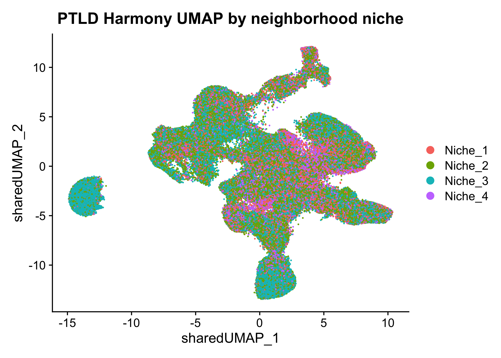
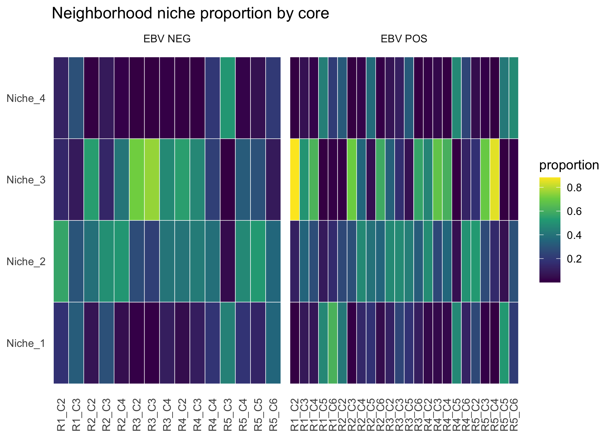
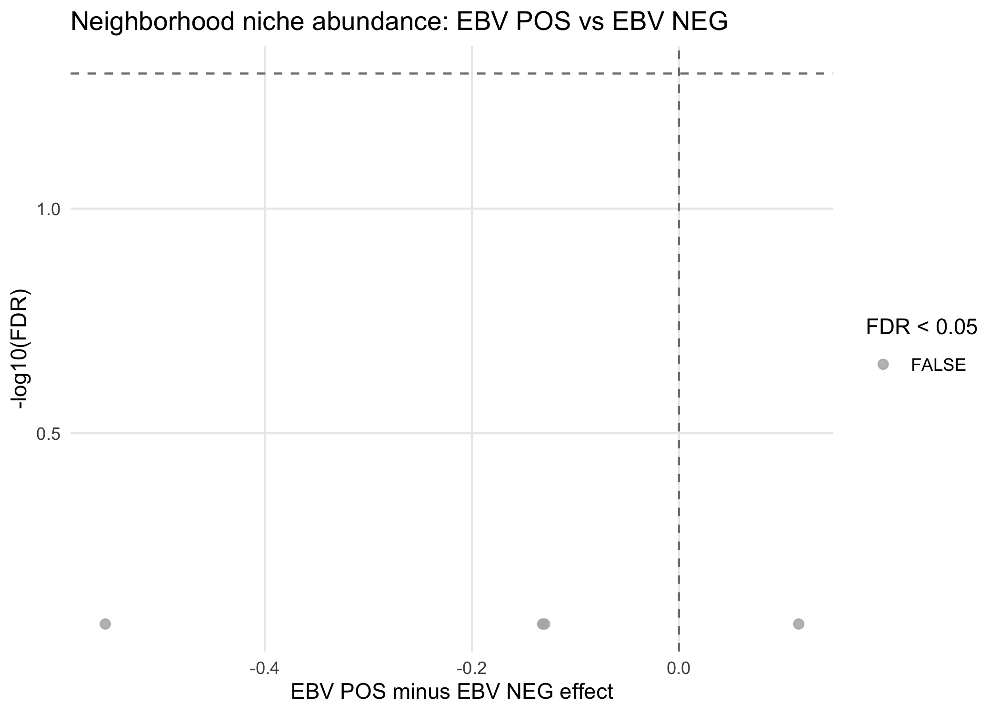
This section uses the same within-core neighborhood graph to quantify adjacency structure. Pairwise enrichments are normalized by within-core label permutations so the resulting EBV-status comparison reflects interface enrichment beyond what would be expected from cell abundance alone. Interfaces are measured per core, then averaged across technical replicate cores from the same patient before limma testing.
interface_out_dir <- file.path(output_root, "EBV_cellcell_interfaces")
dir.create(interface_out_dir, showWarnings = FALSE, recursive = TRUE)
empty_interface_metric_df <- function() {
data.frame(
sample_key = character(),
condition = character(),
core_id = character(),
patient_id = character(),
sample_id = character(),
feature = character(),
observed = numeric(),
perm_mean = numeric(),
enrichment = numeric(),
z_score = numeric(),
stringsAsFactors = FALSE
)
}
empty_limma_df <- function() {
data.frame(
logFC = numeric(),
AveExpr = numeric(),
t = numeric(),
P.Value = numeric(),
adj.P.Val = numeric(),
B = numeric(),
feature = character(),
stringsAsFactors = FALSE
)
}
compute_unordered_pair_enrichment <- function(core_df, edge_df, label_col, n_perm = 100) {
labels <- as.character(core_df[[label_col]])
names(labels) <- core_df$key
valid_cells <- !is.na(labels) & labels != ""
labels <- labels[valid_cells]
if (length(labels) < 2) return(data.frame())
source_idx <- match(edge_df$source_cell, names(labels))
target_idx <- match(edge_df$target_cell, names(labels))
valid_edges <- !is.na(source_idx) & !is.na(target_idx)
source_idx <- source_idx[valid_edges]
target_idx <- target_idx[valid_edges]
if (length(source_idx) == 0) return(data.frame())
label_levels <- sort(unique(labels))
all_pairs <- character()
for (i in seq_along(label_levels)) {
for (j in i:length(label_levels)) {
all_pairs <- c(all_pairs, paste(label_levels[i], label_levels[j], sep = " <-> "))
}
}
make_pairs <- function(label_vec) {
left <- label_vec[source_idx]
right <- label_vec[target_idx]
pair_vec <- paste(pmin(left, right), pmax(left, right), sep = " <-> ")
table(factor(pair_vec, levels = all_pairs))
}
observed <- make_pairs(unname(labels))
perm_mat <- replicate(n_perm, make_pairs(sample(unname(labels))), simplify = "matrix")
perm_mean <- rowMeans(perm_mat)
perm_sd <- apply(perm_mat, 1, stats::sd)
perm_sd[perm_sd == 0 | is.na(perm_sd)] <- 1
data.frame(
feature = names(observed),
observed = as.numeric(observed),
perm_mean = as.numeric(perm_mean),
enrichment = log2((as.numeric(observed) + 1) / (as.numeric(perm_mean) + 1)),
z_score = (as.numeric(observed) - as.numeric(perm_mean)) / perm_sd,
stringsAsFactors = FALSE
)
}
candidate_malignant_b_positive_calls <- c("Candidate malignant B", "EBV-positive candidate malignant B")
is_candidate_malignant_b_cell <- function(df) {
if (!"candidate_malignant_b_call" %in% colnames(df)) {
return(rep(FALSE, nrow(df)))
}
as.character(df$candidate_malignant_b_call) %in% candidate_malignant_b_positive_calls
}
compute_cross_state_enrichment <- function(core_df, edge_df, b_col = "malignant_b_state", b_keep = NULL, n_perm = 100) {
if (!b_col %in% colnames(core_df)) {
return(data.frame())
}
t_labels <- as.character(core_df$tcell_state)
b_labels <- as.character(core_df[[b_col]])
if (!is.null(b_keep)) {
b_labels[!b_keep] <- NA_character_
}
names(t_labels) <- core_df$key
names(b_labels) <- core_df$key
t_levels <- sort(unique(na.omit(t_labels[t_labels != ""])))
b_levels <- sort(unique(na.omit(b_labels[b_labels != ""])))
if (length(t_levels) == 0 || length(b_levels) == 0) return(data.frame())
source_idx <- match(edge_df$source_cell, core_df$key)
target_idx <- match(edge_df$target_cell, core_df$key)
valid_edges <- !is.na(source_idx) & !is.na(target_idx)
source_idx <- source_idx[valid_edges]
target_idx <- target_idx[valid_edges]
if (length(source_idx) == 0) return(data.frame())
all_pairs <- as.vector(outer(t_levels, b_levels, paste, sep = " <-> "))
make_pairs <- function(t_vec, b_vec) {
source_t <- t_vec[source_idx]
target_t <- t_vec[target_idx]
source_b <- b_vec[source_idx]
target_b <- b_vec[target_idx]
pair_vec <- ifelse(
!is.na(source_t) & !is.na(target_b),
paste(source_t, target_b, sep = " <-> "),
ifelse(
!is.na(target_t) & !is.na(source_b),
paste(target_t, source_b, sep = " <-> "),
NA_character_
)
)
table(factor(pair_vec, levels = all_pairs))
}
observed <- make_pairs(t_labels, b_labels)
perm_mat <- replicate(
n_perm,
make_pairs(sample(t_labels), sample(b_labels)),
simplify = "matrix"
)
perm_mean <- rowMeans(perm_mat)
perm_sd <- apply(perm_mat, 1, stats::sd)
perm_sd[perm_sd == 0 | is.na(perm_sd)] <- 1
data.frame(
feature = names(observed),
observed = as.numeric(observed),
perm_mean = as.numeric(perm_mean),
enrichment = log2((as.numeric(observed) + 1) / (as.numeric(perm_mean) + 1)),
z_score = (as.numeric(observed) - as.numeric(perm_mean)) / perm_sd,
stringsAsFactors = FALSE
)
}
interface_cache <- make_cache_file("interface_patient_results", family = "spatial", segmentation_cache_tag, "k10", "perm100", "candidate_malignant_b_v4_canonical_marker_override_v2_no_epithelial")
interface_bundle <- get_cached_rds(
interface_cache,
function() benchmark_stage("interface_enrichment", {
interface_results_local <- get_cached_rds(
file.path(cache_root, "ptld_interface_enrichment_k10_perm100_candidate_malignant_b_v4_canonical_marker_override_v2_no_epithelial.rds"),
function() {
core_split <- split(ptld_analysis_cells, interaction(ptld_analysis_cells$sample_key, ptld_analysis_cells$core_id, drop = TRUE))
edge_split <- split(neighborhood_res$edges, interaction(neighborhood_res$edges$sample_key, neighborhood_res$edges$core_id, drop = TRUE))
per_core_interface <- maybe_future_lapply(
intersect(names(core_split), names(edge_split)),
function(nm) {
worker_thread_initializer()
core_df <- core_split[[nm]]
edge_df <- edge_split[[nm]]
base_info <- unique(core_df[, c("sample_key", "condition", "core_id", "patient_id"), drop = FALSE])[1, , drop = FALSE]
base_info$sample_id <- paste(base_info$condition, base_info$core_id, sep = "__")
base_info$core_total <- nrow(core_df)
celltype_df <- compute_unordered_pair_enrichment(core_df, edge_df, label_col = "cell_type_refined", n_perm = 100)
candidate_mask <- is_candidate_malignant_b_cell(core_df)
cross_df <- compute_cross_state_enrichment(core_df, edge_df, b_col = "malignant_b_state", n_perm = 100)
candidate_call_df <- compute_cross_state_enrichment(core_df, edge_df, b_col = "candidate_malignant_b_call", b_keep = candidate_mask, n_perm = 100)
candidate_program_df <- compute_cross_state_enrichment(core_df, edge_df, b_col = "candidate_malignant_b_program", b_keep = candidate_mask, n_perm = 100)
list(
celltype = if (nrow(celltype_df) > 0) cbind(base_info, celltype_df, stringsAsFactors = FALSE) else NULL,
cross = if (nrow(cross_df) > 0) cbind(base_info, cross_df, stringsAsFactors = FALSE) else NULL,
candidate_call = if (nrow(candidate_call_df) > 0) cbind(base_info, candidate_call_df, stringsAsFactors = FALSE) else NULL,
candidate_program = if (nrow(candidate_program_df) > 0) cbind(base_info, candidate_program_df, stringsAsFactors = FALSE) else NULL
)
}
)
celltype_list <- lapply(per_core_interface, `[[`, "celltype")
cross_list <- lapply(per_core_interface, `[[`, "cross")
candidate_call_list <- lapply(per_core_interface, `[[`, "candidate_call")
candidate_program_list <- lapply(per_core_interface, `[[`, "candidate_program")
celltype_list <- celltype_list[!vapply(celltype_list, is.null, logical(1))]
cross_list <- cross_list[!vapply(cross_list, is.null, logical(1))]
candidate_call_list <- candidate_call_list[!vapply(candidate_call_list, is.null, logical(1))]
candidate_program_list <- candidate_program_list[!vapply(candidate_program_list, is.null, logical(1))]
list(
celltype = if (length(celltype_list) > 0) do.call(rbind, celltype_list) else empty_interface_metric_df(),
tcell_malignant = if (length(cross_list) > 0) do.call(rbind, cross_list) else empty_interface_metric_df(),
tcell_candidate_malignant_b_call = if (length(candidate_call_list) > 0) do.call(rbind, candidate_call_list) else empty_interface_metric_df(),
tcell_candidate_malignant_b_program = if (length(candidate_program_list) > 0) do.call(rbind, candidate_program_list) else empty_interface_metric_df()
)
},
refresh = refresh_spatial,
expected_version = make_cache_tag(segmentation_cache_tag, "interface_enrichment", "k10", "perm100", "candidate_malignant_b_v4_canonical_marker_override_v2_no_epithelial"),
allow_legacy = FALSE
)
interface_required_cols <- c("sample_key", "condition", "core_id", "patient_id", "sample_id", "feature", "observed", "perm_mean", "enrichment", "z_score")
cache_is_compatible <- function(x) {
is.data.frame(x) && all(interface_required_cols %in% colnames(x))
}
if (
!cache_is_compatible(interface_results_local$celltype) ||
!cache_is_compatible(interface_results_local$tcell_malignant) ||
!cache_is_compatible(interface_results_local$tcell_candidate_malignant_b_call) ||
!cache_is_compatible(interface_results_local$tcell_candidate_malignant_b_program)
) {
message("Rebuilding interface-enrichment cache because stored results do not have the expected columns.")
core_split <- split(ptld_analysis_cells, interaction(ptld_analysis_cells$sample_key, ptld_analysis_cells$core_id, drop = TRUE))
edge_split <- split(neighborhood_res$edges, interaction(neighborhood_res$edges$sample_key, neighborhood_res$edges$core_id, drop = TRUE))
per_core_interface <- maybe_future_lapply(
intersect(names(core_split), names(edge_split)),
function(nm) {
worker_thread_initializer()
core_df <- core_split[[nm]]
edge_df <- edge_split[[nm]]
base_info <- unique(core_df[, c("sample_key", "condition", "core_id", "patient_id"), drop = FALSE])[1, , drop = FALSE]
base_info$sample_id <- paste(base_info$condition, base_info$core_id, sep = "__")
base_info$core_total <- nrow(core_df)
celltype_df <- compute_unordered_pair_enrichment(core_df, edge_df, label_col = "cell_type_refined", n_perm = 100)
candidate_mask <- is_candidate_malignant_b_cell(core_df)
cross_df <- compute_cross_state_enrichment(core_df, edge_df, b_col = "malignant_b_state", n_perm = 100)
candidate_call_df <- compute_cross_state_enrichment(core_df, edge_df, b_col = "candidate_malignant_b_call", b_keep = candidate_mask, n_perm = 100)
candidate_program_df <- compute_cross_state_enrichment(core_df, edge_df, b_col = "candidate_malignant_b_program", b_keep = candidate_mask, n_perm = 100)
list(
celltype = if (nrow(celltype_df) > 0) cbind(base_info, celltype_df, stringsAsFactors = FALSE) else NULL,
cross = if (nrow(cross_df) > 0) cbind(base_info, cross_df, stringsAsFactors = FALSE) else NULL,
candidate_call = if (nrow(candidate_call_df) > 0) cbind(base_info, candidate_call_df, stringsAsFactors = FALSE) else NULL,
candidate_program = if (nrow(candidate_program_df) > 0) cbind(base_info, candidate_program_df, stringsAsFactors = FALSE) else NULL
)
}
)
celltype_list <- lapply(per_core_interface, `[[`, "celltype")
cross_list <- lapply(per_core_interface, `[[`, "cross")
candidate_call_list <- lapply(per_core_interface, `[[`, "candidate_call")
candidate_program_list <- lapply(per_core_interface, `[[`, "candidate_program")
celltype_list <- celltype_list[!vapply(celltype_list, is.null, logical(1))]
cross_list <- cross_list[!vapply(cross_list, is.null, logical(1))]
candidate_call_list <- candidate_call_list[!vapply(candidate_call_list, is.null, logical(1))]
candidate_program_list <- candidate_program_list[!vapply(candidate_program_list, is.null, logical(1))]
interface_results_local <- list(
celltype = if (length(celltype_list) > 0) do.call(rbind, celltype_list) else empty_interface_metric_df(),
tcell_malignant = if (length(cross_list) > 0) do.call(rbind, cross_list) else empty_interface_metric_df(),
tcell_candidate_malignant_b_call = if (length(candidate_call_list) > 0) do.call(rbind, candidate_call_list) else empty_interface_metric_df(),
tcell_candidate_malignant_b_program = if (length(candidate_program_list) > 0) do.call(rbind, candidate_program_list) else empty_interface_metric_df()
)
write_cache_bundle(
file.path(cache_root, "ptld_interface_enrichment_k10_perm100_candidate_malignant_b_v4_canonical_marker_override_v2_no_epithelial.rds"),
interface_results_local,
expected_version = make_cache_tag(segmentation_cache_tag, "interface_enrichment", "k10", "perm100", "candidate_malignant_b_v4_canonical_marker_override_v2_no_epithelial")
)
}
if (is.null(interface_results_local$celltype) || !"feature" %in% colnames(interface_results_local$celltype)) {
interface_results_local$celltype <- empty_interface_metric_df()
}
if (is.null(interface_results_local$tcell_malignant) || !"feature" %in% colnames(interface_results_local$tcell_malignant)) {
interface_results_local$tcell_malignant <- empty_interface_metric_df()
}
if (is.null(interface_results_local$tcell_candidate_malignant_b_call) || !"feature" %in% colnames(interface_results_local$tcell_candidate_malignant_b_call)) {
interface_results_local$tcell_candidate_malignant_b_call <- empty_interface_metric_df()
}
if (is.null(interface_results_local$tcell_candidate_malignant_b_program) || !"feature" %in% colnames(interface_results_local$tcell_candidate_malignant_b_program)) {
interface_results_local$tcell_candidate_malignant_b_program <- empty_interface_metric_df()
}
if (nrow(interface_results_local$celltype) > 0) {
interface_results_local$celltype$value <- interface_results_local$celltype$enrichment
celltype_patient_metrics_local <- collapse_metrics_to_patient(
interface_results_local$celltype,
value_cols = c("observed", "perm_mean", "enrichment", "z_score", "value"),
weight_col = "core_total"
)
celltype_interface_limma_local <- run_core_feature_limma(
celltype_patient_metrics_local,
sample_col = "patient_id",
value_col = "value"
)
celltype_interface_limma_local$feature <- rownames(celltype_interface_limma_local)
} else {
celltype_patient_metrics_local <- data.frame()
celltype_interface_limma_local <- empty_limma_df()
}
if (nrow(interface_results_local$tcell_malignant) > 0) {
interface_results_local$tcell_malignant$value <- interface_results_local$tcell_malignant$enrichment
cross_patient_metrics_local <- collapse_metrics_to_patient(
interface_results_local$tcell_malignant,
value_cols = c("observed", "perm_mean", "enrichment", "z_score", "value"),
weight_col = "core_total"
)
cross_interface_limma_local <- run_core_feature_limma(
cross_patient_metrics_local,
sample_col = "patient_id",
value_col = "value"
)
cross_interface_limma_local$feature <- rownames(cross_interface_limma_local)
} else {
cross_patient_metrics_local <- data.frame()
cross_interface_limma_local <- empty_limma_df()
}
summarize_interface_result <- function(interface_df) {
if (nrow(interface_df) == 0) {
return(list(patient_metrics = data.frame(), limma = empty_limma_df()))
}
interface_df$value <- interface_df$enrichment
patient_metrics <- collapse_metrics_to_patient(
interface_df,
value_cols = c("observed", "perm_mean", "enrichment", "z_score", "value"),
weight_col = "core_total"
)
limma_res <- run_core_feature_limma(
patient_metrics,
sample_col = "patient_id",
value_col = "value"
)
limma_res$feature <- rownames(limma_res)
list(patient_metrics = patient_metrics, limma = limma_res)
}
candidate_call_summary_local <- summarize_interface_result(interface_results_local$tcell_candidate_malignant_b_call)
candidate_program_summary_local <- summarize_interface_result(interface_results_local$tcell_candidate_malignant_b_program)
list(
interface_results = interface_results_local,
celltype_patient_metrics = celltype_patient_metrics_local,
cross_patient_metrics = cross_patient_metrics_local,
celltype_interface_limma = celltype_interface_limma_local,
cross_interface_limma = cross_interface_limma_local,
candidate_call_patient_metrics = candidate_call_summary_local$patient_metrics,
candidate_program_patient_metrics = candidate_program_summary_local$patient_metrics,
candidate_call_interface_limma = candidate_call_summary_local$limma,
candidate_program_interface_limma = candidate_program_summary_local$limma
)
}),
refresh = refresh_spatial,
metadata = list(stage = "interface_patient_results", k = 10, permutations = 100)
)## Using cache: interface_patient_results_spatial_20260328_layered_cache_v1_k10_perm100_candidate_malignant_b_v4_canonical_marker_override_v2_no_epithelialproseg_primary_v1 interface_results <- interface_bundle$interface_results
celltype_patient_metrics <- interface_bundle$celltype_patient_metrics
cross_patient_metrics <- interface_bundle$cross_patient_metrics
celltype_interface_limma <- interface_bundle$celltype_interface_limma
cross_interface_limma <- interface_bundle$cross_interface_limma
candidate_call_patient_metrics <- interface_bundle$candidate_call_patient_metrics
candidate_program_patient_metrics <- interface_bundle$candidate_program_patient_metrics
candidate_call_interface_limma <- interface_bundle$candidate_call_interface_limma
candidate_program_interface_limma <- interface_bundle$candidate_program_interface_limma
if (is.null(candidate_call_patient_metrics)) candidate_call_patient_metrics <- data.frame()
if (is.null(candidate_program_patient_metrics)) candidate_program_patient_metrics <- data.frame()
if (is.null(candidate_call_interface_limma)) candidate_call_interface_limma <- empty_limma_df()
if (is.null(candidate_program_interface_limma)) candidate_program_interface_limma <- empty_limma_df()
interface_required_cols <- c("sample_key", "condition", "core_id", "patient_id", "sample_id", "feature", "observed", "perm_mean", "enrichment", "z_score")
cache_is_compatible <- function(x) {
is.data.frame(x) && all(interface_required_cols %in% colnames(x))
}
if (is.null(interface_results$celltype) || !"feature" %in% colnames(interface_results$celltype)) {
interface_results$celltype <- empty_interface_metric_df()
}
if (is.null(interface_results$tcell_malignant) || !"feature" %in% colnames(interface_results$tcell_malignant)) {
interface_results$tcell_malignant <- empty_interface_metric_df()
}
if (is.null(interface_results$tcell_candidate_malignant_b_call) || !"feature" %in% colnames(interface_results$tcell_candidate_malignant_b_call)) {
interface_results$tcell_candidate_malignant_b_call <- empty_interface_metric_df()
}
if (is.null(interface_results$tcell_candidate_malignant_b_program) || !"feature" %in% colnames(interface_results$tcell_candidate_malignant_b_program)) {
interface_results$tcell_candidate_malignant_b_program <- empty_interface_metric_df()
}
write.csv(interface_results$celltype, file = file.path(interface_out_dir, "celltype_interface_enrichment_by_core.csv"), row.names = FALSE)
write.csv(interface_results$tcell_malignant, file = file.path(interface_out_dir, "tcell_malignant_interface_enrichment_by_core.csv"), row.names = FALSE)
write.csv(interface_results$tcell_candidate_malignant_b_call, file = file.path(interface_out_dir, "tcell_candidate_malignant_b_call_interface_enrichment_by_core.csv"), row.names = FALSE)
write.csv(interface_results$tcell_candidate_malignant_b_program, file = file.path(interface_out_dir, "tcell_candidate_malignant_b_program_interface_enrichment_by_core.csv"), row.names = FALSE)
if (nrow(celltype_patient_metrics) == 0) {
message("No cell-type interface metrics were generated for replicate-level testing.")
}
if (nrow(cross_patient_metrics) == 0) {
message("No T-cell-state to B-cell-program interface metrics were generated for replicate-level testing.")
}
if (nrow(candidate_call_patient_metrics) == 0) {
message("No T-cell-state to candidate malignant-B-call interface metrics were generated for replicate-level testing.")
}
if (nrow(candidate_program_patient_metrics) == 0) {
message("No T-cell-state to candidate malignant-B-program interface metrics were generated for replicate-level testing.")
}
write.csv(celltype_patient_metrics, file = file.path(interface_out_dir, "celltype_interface_enrichment_by_patient.csv"), row.names = FALSE)
write.csv(cross_patient_metrics, file = file.path(interface_out_dir, "tcell_malignant_interface_enrichment_by_patient.csv"), row.names = FALSE)
write.csv(candidate_call_patient_metrics, file = file.path(interface_out_dir, "tcell_candidate_malignant_b_call_interface_enrichment_by_patient.csv"), row.names = FALSE)
write.csv(candidate_program_patient_metrics, file = file.path(interface_out_dir, "tcell_candidate_malignant_b_program_interface_enrichment_by_patient.csv"), row.names = FALSE)
write.csv(celltype_interface_limma, file = file.path(interface_out_dir, "celltype_interface_limma.csv"), row.names = FALSE)
write.csv(cross_interface_limma, file = file.path(interface_out_dir, "tcell_malignant_interface_limma.csv"), row.names = FALSE)
write.csv(candidate_call_interface_limma, file = file.path(interface_out_dir, "tcell_candidate_malignant_b_call_interface_limma.csv"), row.names = FALSE)
write.csv(candidate_program_interface_limma, file = file.path(interface_out_dir, "tcell_candidate_malignant_b_program_interface_limma.csv"), row.names = FALSE)
write.csv(interface_results$celltype, file = file.path(interface_out_dir, "celltype_interface_enrichment_by_core.csv"), row.names = FALSE)
write.csv(interface_results$tcell_malignant, file = file.path(interface_out_dir, "tcell_malignant_interface_enrichment_by_core.csv"), row.names = FALSE)
write.csv(celltype_patient_metrics, file = file.path(interface_out_dir, "celltype_interface_by_patient.csv"), row.names = FALSE)
write.csv(cross_patient_metrics, file = file.path(interface_out_dir, "tcell_malignant_interface_by_patient.csv"), row.names = FALSE)
write.csv(candidate_call_patient_metrics, file = file.path(interface_out_dir, "tcell_candidate_malignant_b_call_interface_by_patient.csv"), row.names = FALSE)
write.csv(candidate_program_patient_metrics, file = file.path(interface_out_dir, "tcell_candidate_malignant_b_program_interface_by_patient.csv"), row.names = FALSE)
write.csv(celltype_interface_limma, file = file.path(interface_out_dir, "celltype_interface_patient_level_limma.csv"), row.names = FALSE)
write.csv(cross_interface_limma, file = file.path(interface_out_dir, "tcell_malignant_interface_patient_level_limma.csv"), row.names = FALSE)
write.csv(candidate_call_interface_limma, file = file.path(interface_out_dir, "tcell_candidate_malignant_b_call_interface_patient_level_limma.csv"), row.names = FALSE)
write.csv(candidate_program_interface_limma, file = file.path(interface_out_dir, "tcell_candidate_malignant_b_program_interface_patient_level_limma.csv"), row.names = FALSE)
decode_interface_pair_label <- function(feature, left_levels, right_levels) {
parts <- strsplit(as.character(feature), " <-> ", fixed = TRUE)
vapply(
parts,
function(pair) {
if (length(pair) != 2) return(paste(pair, collapse = " <-> "))
left <- pair[[1]]
right <- pair[[2]]
left_i <- suppressWarnings(as.integer(left))
right_i <- suppressWarnings(as.integer(right))
if (!is.na(left_i) && left_i >= 1 && left_i <= length(left_levels)) {
left <- left_levels[[left_i]]
}
if (!is.na(right_i) && right_i >= 1 && right_i <= length(right_levels)) {
right <- right_levels[[right_i]]
}
paste(left, right, sep = " <-> ")
},
character(1)
)
}
if (nrow(interface_results$tcell_malignant) > 0) {
interface_results$tcell_malignant$feature_display <- decode_interface_pair_label(
interface_results$tcell_malignant$feature,
left_levels = tcell_state_levels,
right_levels = malignant_b_state_levels
)
}
if (nrow(cross_interface_limma) > 0) {
cross_interface_limma$feature_display <- decode_interface_pair_label(
cross_interface_limma$feature,
left_levels = tcell_state_levels,
right_levels = malignant_b_state_levels
)
}
if (nrow(interface_results$tcell_candidate_malignant_b_call) > 0) {
interface_results$tcell_candidate_malignant_b_call$feature_display <- decode_interface_pair_label(
interface_results$tcell_candidate_malignant_b_call$feature,
left_levels = tcell_state_levels,
right_levels = candidate_malignant_b_positive_calls
)
}
if (nrow(candidate_call_interface_limma) > 0) {
candidate_call_interface_limma$feature_display <- decode_interface_pair_label(
candidate_call_interface_limma$feature,
left_levels = tcell_state_levels,
right_levels = candidate_malignant_b_positive_calls
)
}
prioritized_celltype <- interface_results$celltype[
grepl("macrophage", interface_results$celltype$feature, ignore.case = TRUE) &
grepl("CD8 cytotoxic|CD4 helper|Treg|CXCR5\\+ lymph|NK", interface_results$celltype$feature),
,
drop = FALSE
]
prioritized_cross <- interface_results$tcell_malignant[
grepl("^(CD8 exhausted|Treg|Tfh / CXCR5\\+ helper) <->", interface_results$tcell_malignant$feature_display),
,
drop = FALSE
]
prioritized_candidate_call <- interface_results$tcell_candidate_malignant_b_call[
grepl("^(CD8 exhausted|Treg|Tfh / CXCR5\\+ helper|CD8 cytotoxic) <->", interface_results$tcell_candidate_malignant_b_call$feature_display),
,
drop = FALSE
]
prioritized_candidate_program <- interface_results$tcell_candidate_malignant_b_program[
grepl("^(CD8 exhausted|Treg|Tfh / CXCR5\\+ helper|CD8 cytotoxic) <->", interface_results$tcell_candidate_malignant_b_program$feature),
,
drop = FALSE
]
if (nrow(prioritized_celltype) > 0) {
p_interface_box <- make_condition_boxplot(
prioritized_celltype,
feature_col = "feature",
value_col = "enrichment",
title_text = "Macrophage-T-cell interface enrichment by core",
y_label = "log2 observed / permuted",
add_pairwise = TRUE
)
show_and_save_plot(
p_interface_box,
filename = file.path(interface_out_dir, "prioritized_celltype_interface_boxplots.jpg"),
width = 12,
height = max(4, 2 + 1.2 * ceiling(length(unique(prioritized_celltype$feature)) / 4))
)
}
if (nrow(prioritized_cross) > 0) {
n_prioritized_cross_features <- length(unique(prioritized_cross$feature_display))
p_cross_box <- make_condition_boxplot(
prioritized_cross,
feature_col = "feature_display",
value_col = "enrichment",
title_text = "T-cell-state to B-cell-program/state interface enrichment by core",
y_label = "log2 observed / permuted",
add_pairwise = TRUE,
point_size = 1.2,
facet_ncol = 4,
facet_label_width = 18
)
show_and_save_plot(
p_cross_box,
filename = file.path(interface_out_dir, "prioritized_tcell_malignant_interface_boxplots.jpg"),
width = 12,
height = max(12, 4.4 * ceiling(n_prioritized_cross_features / 4) + 2)
)
}
if (nrow(prioritized_candidate_call) > 0) {
p_candidate_call_box <- make_condition_boxplot(
prioritized_candidate_call,
feature_col = "feature_display",
value_col = "enrichment",
title_text = "T-cell-state to candidate malignant-B-call interface enrichment by core",
y_label = "log2 observed / permuted",
add_pairwise = TRUE
)
show_and_save_plot(
p_candidate_call_box,
filename = file.path(interface_out_dir, "prioritized_tcell_candidate_malignant_b_call_interface_boxplots.jpg"),
width = 12,
height = max(4, 2 + 1.2 * ceiling(length(unique(prioritized_candidate_call$feature)) / 4))
)
}
if (nrow(prioritized_candidate_program) > 0) {
p_candidate_program_box <- make_condition_boxplot(
prioritized_candidate_program,
feature_col = "feature",
value_col = "enrichment",
title_text = "T-cell-state to candidate malignant-B-program interface enrichment by core",
y_label = "log2 observed / permuted",
add_pairwise = TRUE
)
show_and_save_plot(
p_candidate_program_box,
filename = file.path(interface_out_dir, "prioritized_tcell_candidate_malignant_b_program_interface_boxplots.jpg"),
width = 12,
height = max(4, 2 + 1.2 * ceiling(length(unique(prioritized_candidate_program$feature)) / 4))
)
}
if (nrow(celltype_interface_limma) > 0) {
p_celltype_interface_effect <- make_limma_effect_plot(
celltype_interface_limma,
title_text = "Cell-type interface enrichment: EBV POS vs EBV NEG"
)
show_and_save_plot(
p_celltype_interface_effect,
filename = file.path(interface_out_dir, "celltype_interface_effect_summary.jpg"),
width = 8,
height = 6
)
}
if (nrow(cross_interface_limma) > 0) {
p_cross_interface_effect <- make_limma_effect_plot(
cross_interface_limma,
feature_col = "feature_display",
title_text = "T-cell-state to B-cell-program/state interface enrichment"
) +
labs(caption = "Pairs are T-cell state <-> B-cell program/state. Positive effects indicate higher interface enrichment in EBV POS.")
show_and_save_plot(
p_cross_interface_effect,
filename = file.path(interface_out_dir, "tcell_malignant_interface_effect_summary.jpg"),
width = 8,
height = 6
)
}
if (nrow(candidate_call_interface_limma) > 0) {
p_candidate_call_interface_effect <- make_limma_effect_plot(
candidate_call_interface_limma,
feature_col = "feature_display",
title_text = "T-cell-state to candidate malignant-B-call interface enrichment"
)
show_and_save_plot(
p_candidate_call_interface_effect,
filename = file.path(interface_out_dir, "tcell_candidate_malignant_b_call_interface_effect_summary.jpg"),
width = 8,
height = 6
)
}
if (nrow(candidate_program_interface_limma) > 0) {
p_candidate_program_interface_effect <- make_limma_effect_plot(
candidate_program_interface_limma,
title_text = "T-cell-state to candidate malignant-B-program interface enrichment"
)
show_and_save_plot(
p_candidate_program_interface_effect,
filename = file.path(interface_out_dir, "tcell_candidate_malignant_b_program_interface_effect_summary.jpg"),
width = 8,
height = 6
)
}
utils::head(cross_interface_limma)## logFC AveExpr
## CD4 helper <-> Antigen-presentation / HLA-II-high 0.17386835 0.03386022
## CD4 helper <-> BCL2-high survival 0.03734242 0.04224120
## CD4 helper <-> GC-like / BCL6-high 0.10571542 0.03751935
## CD4 helper <-> Other malignant B 0.09883307 0.10241500
## CD4 helper <-> Plasma-like / PRDM1-XBP1-MZB1 0.00848634 0.04613325
## CD4 helper <-> Proliferative -0.05759456 0.08184971
## t P.Value
## CD4 helper <-> Antigen-presentation / HLA-II-high 2.4096768 0.02337741
## CD4 helper <-> BCL2-high survival 0.6801967 0.50241911
## CD4 helper <-> GC-like / BCL6-high 0.9806957 0.33582113
## CD4 helper <-> Other malignant B 1.6918785 0.10267572
## CD4 helper <-> Plasma-like / PRDM1-XBP1-MZB1 0.1416844 0.88842633
## CD4 helper <-> Proliferative -1.2254522 0.23143920
## adj.P.Val B
## CD4 helper <-> Antigen-presentation / HLA-II-high 0.1963703 -3.266538
## CD4 helper <-> BCL2-high survival 0.8937343 -5.329761
## CD4 helper <-> GC-like / BCL6-high 0.7423414 -5.117214
## CD4 helper <-> Other malignant B 0.4513295 -4.347855
## CD4 helper <-> Plasma-like / PRDM1-XBP1-MZB1 0.9391775 -5.522177
## CD4 helper <-> Proliferative 0.6075279 -4.892358
## feature
## CD4 helper <-> Antigen-presentation / HLA-II-high CD4 helper <-> Antigen-presentation / HLA-II-high
## CD4 helper <-> BCL2-high survival CD4 helper <-> BCL2-high survival
## CD4 helper <-> GC-like / BCL6-high CD4 helper <-> GC-like / BCL6-high
## CD4 helper <-> Other malignant B CD4 helper <-> Other malignant B
## CD4 helper <-> Plasma-like / PRDM1-XBP1-MZB1 CD4 helper <-> Plasma-like / PRDM1-XBP1-MZB1
## CD4 helper <-> Proliferative CD4 helper <-> Proliferative
## feature_display
## CD4 helper <-> Antigen-presentation / HLA-II-high CD4 helper <-> Antigen-presentation / HLA-II-high
## CD4 helper <-> BCL2-high survival CD4 helper <-> BCL2-high survival
## CD4 helper <-> GC-like / BCL6-high CD4 helper <-> GC-like / BCL6-high
## CD4 helper <-> Other malignant B CD4 helper <-> Other malignant B
## CD4 helper <-> Plasma-like / PRDM1-XBP1-MZB1 CD4 helper <-> Plasma-like / PRDM1-XBP1-MZB1
## CD4 helper <-> Proliferative CD4 helper <-> Proliferative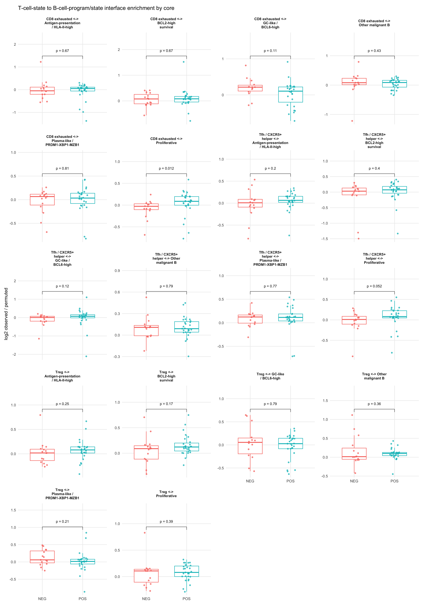
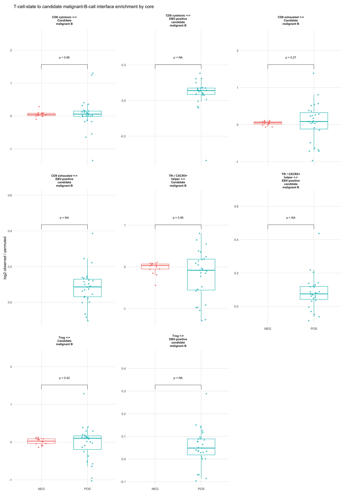
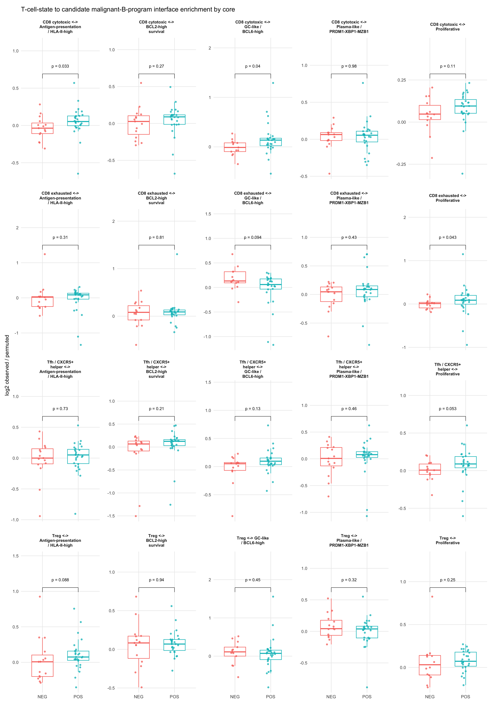
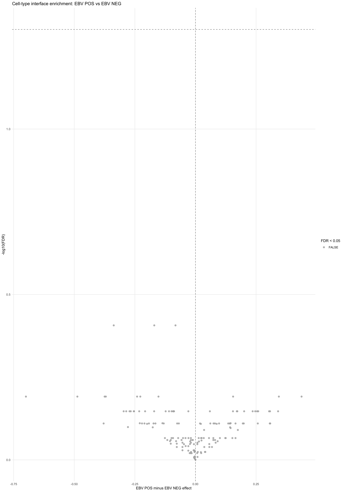
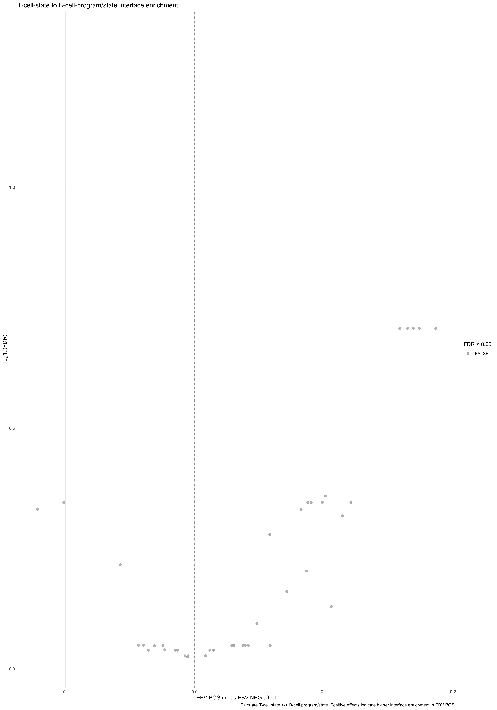
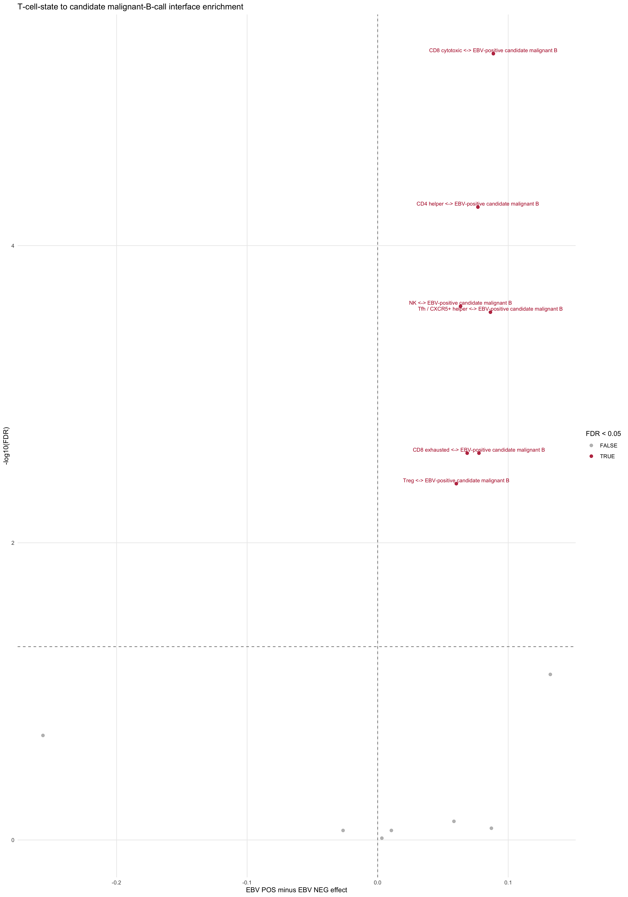
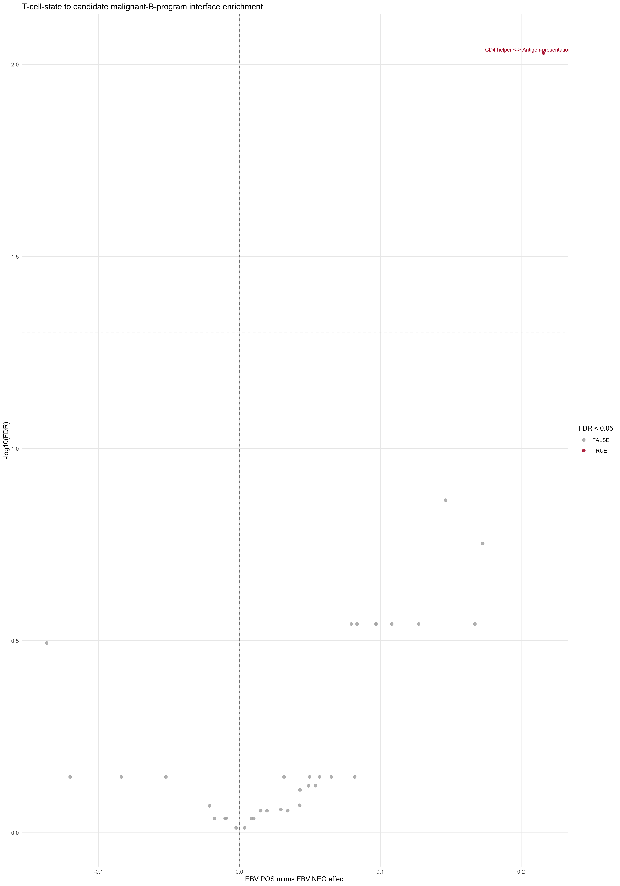
This section focuses on the PD1-PD-L1 axis at the expression, state, and adjacency levels. “High” expression thresholds are defined within lineage across the PTLD-only included-cell population and then reused for all EBV-status comparisons. Core-level metrics are retained for boxplots, while repeated cores from the same patient are averaged before limma testing.
pd_axis_out_dir <- file.path(output_root, "EBV_PD1_PDL1_axis")
dir.create(pd_axis_out_dir, showWarnings = FALSE, recursive = TRUE)
pd_axis_bundle <- get_cached_rds(
make_cache_file("pd_axis_patient_results", family = "reports", segmentation_cache_tag, "candidate_malignant_b_v4_canonical_marker_override_v2_no_epithelial"),
function() benchmark_stage("pd_axis_metrics", {
pd_axis_genes <- c("PDCD1", "CD274", "PDCD1LG2")
pd_axis_expr <- do.call(
rbind,
lapply(names(xenium_by_condition), function(cond) {
obj <- xenium_by_condition[[cond]]
sample_key <- gsub(" ", "_", cond)
keep_cells <- Cells(obj)[obj$core_type == "PTLD" & obj$core_included]
expr_mat <- GetAssayData(obj, layer = "data")
gene_df <- data.frame(
key = paste(sample_key, keep_cells, sep = "_"),
stringsAsFactors = FALSE
)
for (gene in pd_axis_genes) {
gene_df[[gene]] <- if (gene %in% rownames(expr_mat)) {
as.numeric(expr_mat[gene, keep_cells])
} else {
0
}
}
gene_df
})
)
ptld_pd <- merge(ptld_analysis_cells, pd_axis_expr, by = "key", all.x = TRUE, sort = FALSE)
for (gene in pd_axis_genes) {
ptld_pd[[gene]][is.na(ptld_pd[[gene]])] <- 0
}
myeloid_labels <- c("APC-like macrophage", "M2-like macrophage", "Dendritic cell")
t_axis_mask <- !is.na(ptld_pd$tcell_state) & ptld_pd$tcell_state != "NK"
malignant_mask <- is_candidate_malignant_b_cell(ptld_pd)
myeloid_mask <- ptld_pd$cell_type_refined %in% myeloid_labels
threshold_table <- data.frame(
metric = c(
"PDCD1_high_in_T_lineage",
"CD274_high_in_candidate_malignant_B",
"PDCD1LG2_high_in_candidate_malignant_B",
"CD274_high_in_myeloid",
"PDCD1LG2_high_in_myeloid"
),
threshold = c(
stats::quantile(ptld_pd$PDCD1[t_axis_mask], 0.90, na.rm = TRUE),
stats::quantile(ptld_pd$CD274[malignant_mask], 0.90, na.rm = TRUE),
stats::quantile(ptld_pd$PDCD1LG2[malignant_mask], 0.90, na.rm = TRUE),
stats::quantile(ptld_pd$CD274[myeloid_mask], 0.90, na.rm = TRUE),
stats::quantile(ptld_pd$PDCD1LG2[myeloid_mask], 0.90, na.rm = TRUE)
),
stringsAsFactors = FALSE
)
ptld_pd$pd1_high_t <- t_axis_mask & ptld_pd$PDCD1 >= threshold_table$threshold[threshold_table$metric == "PDCD1_high_in_T_lineage"]
ptld_pd$pdl1_high_candidate_malignant <- malignant_mask & ptld_pd$CD274 >= threshold_table$threshold[threshold_table$metric == "CD274_high_in_candidate_malignant_B"]
ptld_pd$pdl2_high_candidate_malignant <- malignant_mask & ptld_pd$PDCD1LG2 >= threshold_table$threshold[threshold_table$metric == "PDCD1LG2_high_in_candidate_malignant_B"]
ptld_pd$pdl1_high_myeloid <- myeloid_mask & ptld_pd$CD274 >= threshold_table$threshold[threshold_table$metric == "CD274_high_in_myeloid"]
ptld_pd$pdl2_high_myeloid <- myeloid_mask & ptld_pd$PDCD1LG2 >= threshold_table$threshold[threshold_table$metric == "PDCD1LG2_high_in_myeloid"]
compute_pd_axis_interface_metrics <- function(core_df, edge_df) {
idx <- match(c(edge_df$source_cell, edge_df$target_cell), core_df$key)
idx <- idx[!is.na(idx)]
if (length(idx) == 0) {
return(c(
frac_pd1_high_t_adj_pdl1_high_candidate_malignant_B = NA_real_,
frac_pd1_high_t_adj_pdl2_high_candidate_malignant_B = NA_real_,
frac_pd1_high_t_adj_pdl1_high_myeloid = NA_real_,
frac_pd1_high_t_adj_pdl2_high_myeloid = NA_real_
))
}
source_map <- match(edge_df$source_cell, core_df$key)
target_map <- match(edge_df$target_cell, core_df$key)
valid_edges <- !is.na(source_map) & !is.na(target_map)
source_map <- source_map[valid_edges]
target_map <- target_map[valid_edges]
pd1_cells <- core_df$key[core_df$pd1_high_t]
if (length(pd1_cells) == 0) {
return(c(
frac_pd1_high_t_adj_pdl1_high_candidate_malignant_B = NA_real_,
frac_pd1_high_t_adj_pdl2_high_candidate_malignant_B = NA_real_,
frac_pd1_high_t_adj_pdl1_high_myeloid = NA_real_,
frac_pd1_high_t_adj_pdl2_high_myeloid = NA_real_
))
}
pd1_touch <- function(target_flag) {
source_hits <- core_df$key[source_map][core_df$pd1_high_t[source_map] & target_flag[target_map]]
target_hits <- core_df$key[target_map][core_df$pd1_high_t[target_map] & target_flag[source_map]]
length(unique(c(source_hits, target_hits))) / length(pd1_cells)
}
c(
frac_pd1_high_t_adj_pdl1_high_candidate_malignant_B = pd1_touch(core_df$pdl1_high_candidate_malignant),
frac_pd1_high_t_adj_pdl2_high_candidate_malignant_B = pd1_touch(core_df$pdl2_high_candidate_malignant),
frac_pd1_high_t_adj_pdl1_high_myeloid = pd1_touch(core_df$pdl1_high_myeloid),
frac_pd1_high_t_adj_pdl2_high_myeloid = pd1_touch(core_df$pdl2_high_myeloid)
)
}
core_split <- split(ptld_pd, interaction(ptld_pd$sample_key, ptld_pd$core_id, drop = TRUE))
edge_split <- split(neighborhood_res$edges, interaction(neighborhood_res$edges$sample_key, neighborhood_res$edges$core_id, drop = TRUE))
# Keep this loop sequential. The closure touches the full PTLD analysis
# table, and future workers try to serialize tens of GiB of globals.
pd_axis_metrics <- lapply(
names(core_split),
function(nm) {
core_df <- core_split[[nm]]
base_row <- unique(core_df[, c("condition", "core_id", "patient_id"), drop = FALSE])[1, , drop = FALSE]
base_row$sample_id <- paste(base_row$condition, base_row$core_id, sep = "__")
base_row$core_total <- nrow(core_df)
core_t_mask <- !is.na(core_df$tcell_state) & core_df$tcell_state != "NK"
core_malignant_mask <- is_candidate_malignant_b_cell(core_df)
core_myeloid_mask <- core_df$cell_type_refined %in% myeloid_labels
metric_rows <- rbind(
data.frame(feature = "mean_PDCD1_t_lineage", value = if (any(core_t_mask)) mean(core_df$PDCD1[core_t_mask], na.rm = TRUE) else NA_real_),
data.frame(feature = "frac_PD1_high_t_lineage", value = if (any(core_t_mask)) mean(core_df$pd1_high_t[core_t_mask], na.rm = TRUE) else NA_real_),
data.frame(feature = "mean_CD274_candidate_malignant_B", value = if (any(core_malignant_mask)) mean(core_df$CD274[core_malignant_mask], na.rm = TRUE) else NA_real_),
data.frame(feature = "frac_CD274_high_candidate_malignant_B", value = if (any(core_malignant_mask)) mean(core_df$pdl1_high_candidate_malignant[core_malignant_mask], na.rm = TRUE) else NA_real_),
data.frame(feature = "mean_PDCD1LG2_candidate_malignant_B", value = if (any(core_malignant_mask)) mean(core_df$PDCD1LG2[core_malignant_mask], na.rm = TRUE) else NA_real_),
data.frame(feature = "frac_PDCD1LG2_high_candidate_malignant_B", value = if (any(core_malignant_mask)) mean(core_df$pdl2_high_candidate_malignant[core_malignant_mask], na.rm = TRUE) else NA_real_),
data.frame(feature = "mean_CD274_myeloid", value = if (any(core_myeloid_mask)) mean(core_df$CD274[core_myeloid_mask], na.rm = TRUE) else NA_real_),
data.frame(feature = "frac_CD274_high_myeloid", value = if (any(core_myeloid_mask)) mean(core_df$pdl1_high_myeloid[core_myeloid_mask], na.rm = TRUE) else NA_real_),
data.frame(feature = "mean_PDCD1LG2_myeloid", value = if (any(core_myeloid_mask)) mean(core_df$PDCD1LG2[core_myeloid_mask], na.rm = TRUE) else NA_real_),
data.frame(feature = "frac_PDCD1LG2_high_myeloid", value = if (any(core_myeloid_mask)) mean(core_df$pdl2_high_myeloid[core_myeloid_mask], na.rm = TRUE) else NA_real_)
)
if (nm %in% names(edge_split)) {
interface_metrics <- compute_pd_axis_interface_metrics(core_df, edge_split[[nm]])
metric_rows <- rbind(
metric_rows,
data.frame(feature = names(interface_metrics), value = as.numeric(interface_metrics), stringsAsFactors = FALSE)
)
}
cbind(base_row, metric_rows, stringsAsFactors = FALSE)
}
)
pd_axis_metrics <- do.call(rbind, pd_axis_metrics)
pd_axis_metrics$value[!is.finite(pd_axis_metrics$value)] <- NA_real_
pd_axis_metrics$test_value <- ifelse(grepl("^frac_", pd_axis_metrics$feature), logit_clamped(pd_axis_metrics$value), pd_axis_metrics$value)
pd_axis_metrics <- pd_axis_metrics[!is.na(pd_axis_metrics$test_value), , drop = FALSE]
pd_axis_patient_metrics <- collapse_metrics_to_patient(
pd_axis_metrics,
value_cols = c("value", "test_value"),
weight_col = "core_total"
)
pd_axis_limma <- run_core_feature_limma(pd_axis_patient_metrics, sample_col = "patient_id", value_col = "test_value")
pd_axis_limma$feature <- rownames(pd_axis_limma)
list(
ptld_analysis_cells = ptld_pd,
threshold_table = threshold_table,
pd_axis_metrics = pd_axis_metrics,
pd_axis_patient_metrics = pd_axis_patient_metrics,
pd_axis_limma = pd_axis_limma
)
}),
refresh = refresh_reports,
metadata = list(stage = "pd_axis_patient_results")
)## Using cache: pd_axis_patient_results_reports_20260328_layered_cache_v1_candidate_malignant_b_v4_canonical_marker_override_v2_no_epithelialproseg_primary_v1 ptld_analysis_cells <- pd_axis_bundle$ptld_analysis_cells
threshold_table <- pd_axis_bundle$threshold_table
pd_axis_metrics <- pd_axis_bundle$pd_axis_metrics
pd_axis_patient_metrics <- pd_axis_bundle$pd_axis_patient_metrics
pd_axis_limma <- pd_axis_bundle$pd_axis_limma
write.csv(threshold_table, file = file.path(pd_axis_out_dir, "pd_axis_thresholds.csv"), row.names = FALSE)
write.csv(pd_axis_metrics, file = file.path(pd_axis_out_dir, "pd_axis_metrics_by_core.csv"), row.names = FALSE)
write.csv(pd_axis_patient_metrics, file = file.path(pd_axis_out_dir, "pd_axis_metrics_by_patient.csv"), row.names = FALSE)
write.csv(pd_axis_limma, file = file.path(pd_axis_out_dir, "pd_axis_limma.csv"), row.names = FALSE)
write.csv(pd_axis_metrics, file = file.path(pd_axis_out_dir, "pd_axis_metrics_by_core.csv"), row.names = FALSE)
write.csv(pd_axis_patient_metrics, file = file.path(pd_axis_out_dir, "pd_axis_metrics_by_patient.csv"), row.names = FALSE)
write.csv(pd_axis_patient_metrics, file = file.path(pd_axis_out_dir, "pd_axis_metrics_patient_level.csv"), row.names = FALSE)
write.csv(pd_axis_limma, file = file.path(pd_axis_out_dir, "pd_axis_patient_level_limma.csv"), row.names = FALSE)
pd_axis_pairwise <- do.call(
rbind,
lapply(split(pd_axis_metrics, pd_axis_metrics$feature), function(df) {
df <- df[!is.na(df$value), , drop = FALSE]
cond_counts <- table(df$condition)
cond_counts <- cond_counts[c("EBV NEG", "EBV POS")]
cond_counts[is.na(cond_counts)] <- 0
if (nrow(df) == 0 || any(cond_counts == 0)) {
return(data.frame(
feature = unique(df$feature)[1],
method = "wilcox.test",
p_value = NA_real_,
p_adj = NA_real_,
stringsAsFactors = FALSE
))
}
wt <- stats::wilcox.test(value ~ condition, data = df, exact = FALSE)
data.frame(
feature = unique(df$feature)[1],
method = "wilcox.test",
p_value = wt$p.value,
stringsAsFactors = FALSE
)
})
)
pd_axis_pairwise$p_adj <- stats::p.adjust(pd_axis_pairwise$p_value, method = "BH")
write.csv(pd_axis_pairwise, file = file.path(pd_axis_out_dir, "pd_axis_pairwise_wilcox.csv"), row.names = FALSE)
p_pd_axis_box <- make_condition_boxplot(
pd_axis_metrics,
feature_col = "feature",
value_col = "value",
title_text = "PD1-PD-L1 axis metrics by PTLD core",
y_label = "Metric value",
add_pairwise = TRUE,
point_size = 1
)
show_and_save_plot(
p_pd_axis_box,
filename = file.path(pd_axis_out_dir, "pd_axis_boxplots.jpg"),
width = 14,
height = 12
)
p_pd_axis_effect <- make_limma_effect_plot(pd_axis_limma, title_text = "PD1-PD-L1 axis metrics: EBV POS vs EBV NEG")
show_and_save_plot(
p_pd_axis_effect,
filename = file.path(pd_axis_out_dir, "pd_axis_effect_summary.jpg"),
width = 8,
height = 6
)
utils::head(pd_axis_limma)## logFC AveExpr
## frac_CD274_high_candidate_malignant_B 6.998857e-01 -2.66828431
## frac_pd1_high_t_adj_pdl1_high_candidate_malignant_B 9.467970e-01 -0.31367839
## frac_pd1_high_t_adj_pdl1_high_myeloid -4.263403e-16 -6.90675478
## frac_pd1_high_t_adj_pdl2_high_candidate_malignant_B 1.017432e+00 -0.07766097
## frac_pd1_high_t_adj_pdl2_high_myeloid -4.263403e-16 -6.90675478
## frac_PD1_high_t_lineage 6.276620e-16 6.90675478
## t P.Value
## frac_CD274_high_candidate_malignant_B 2.610614e+00 0.01811368
## frac_pd1_high_t_adj_pdl1_high_candidate_malignant_B 1.850156e+00 0.08147975
## frac_pd1_high_t_adj_pdl1_high_myeloid -5.979124e-12 1.00000000
## frac_pd1_high_t_adj_pdl2_high_candidate_malignant_B 2.141829e+00 0.04674686
## frac_pd1_high_t_adj_pdl2_high_myeloid -5.979124e-12 1.00000000
## frac_PD1_high_t_lineage 8.802519e-12 1.00000000
## adj.P.Val B
## frac_CD274_high_candidate_malignant_B 0.06037893 -6.718144
## frac_pd1_high_t_adj_pdl1_high_candidate_malignant_B 0.13579958 -8.104762
## frac_pd1_high_t_adj_pdl1_high_myeloid 1.00000000 -9.756560
## frac_pd1_high_t_adj_pdl2_high_candidate_malignant_B 0.09504429 -7.604727
## frac_pd1_high_t_adj_pdl2_high_myeloid 1.00000000 -9.756560
## frac_PD1_high_t_lineage 1.00000000 -9.756560
## feature
## frac_CD274_high_candidate_malignant_B frac_CD274_high_candidate_malignant_B
## frac_pd1_high_t_adj_pdl1_high_candidate_malignant_B frac_pd1_high_t_adj_pdl1_high_candidate_malignant_B
## frac_pd1_high_t_adj_pdl1_high_myeloid frac_pd1_high_t_adj_pdl1_high_myeloid
## frac_pd1_high_t_adj_pdl2_high_candidate_malignant_B frac_pd1_high_t_adj_pdl2_high_candidate_malignant_B
## frac_pd1_high_t_adj_pdl2_high_myeloid frac_pd1_high_t_adj_pdl2_high_myeloid
## frac_PD1_high_t_lineage frac_PD1_high_t_lineage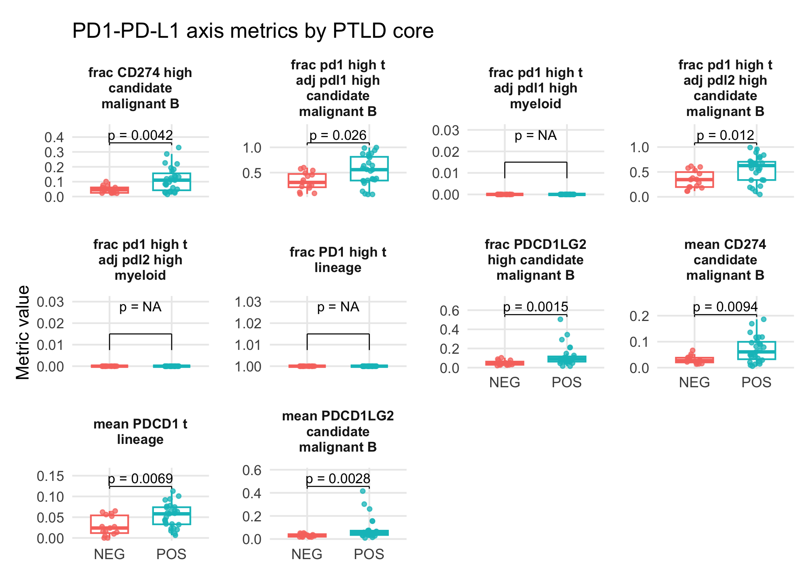
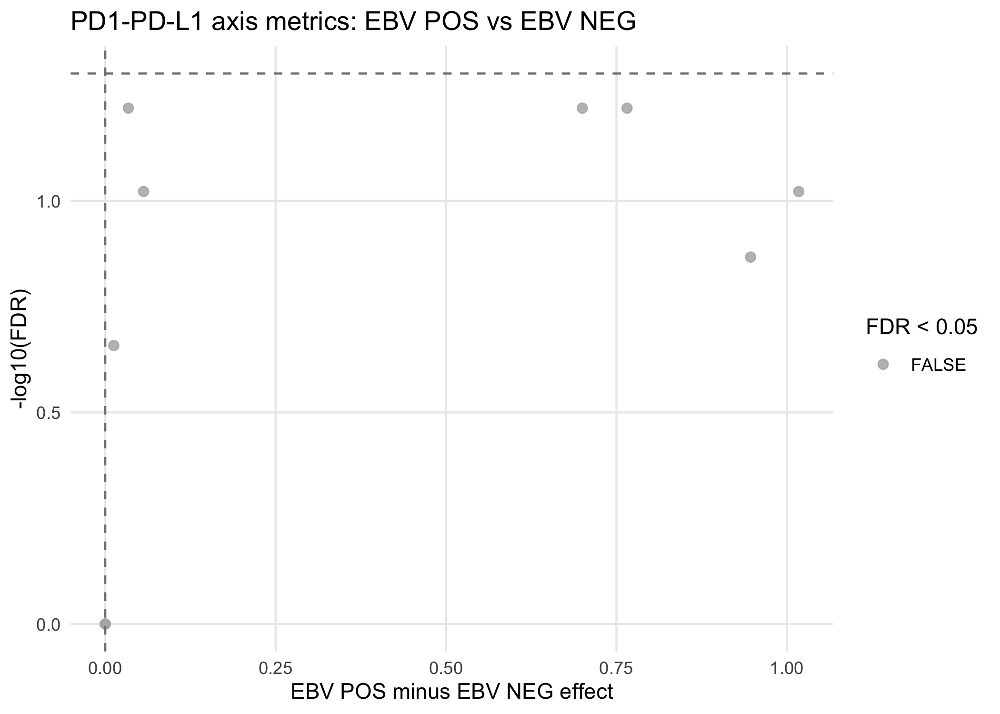
Detailed plot artifact thumbnails and in-page image viewing have been moved to the standalone local viewer:
plot artifact viewerAnalysis/Xenium_artifact_viewers/Xenium_plot_artifact_viewer.htmlThis main website section keeps only the analysis output summaries so the rendered page stays smaller.